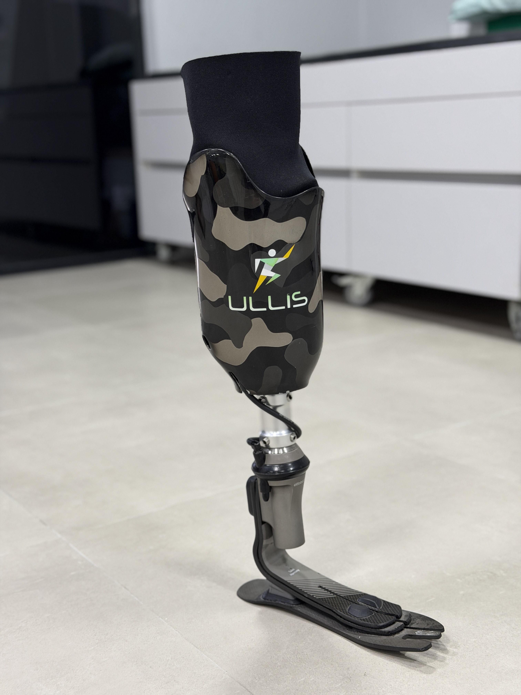
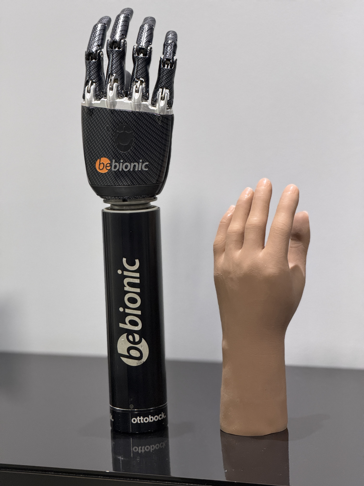
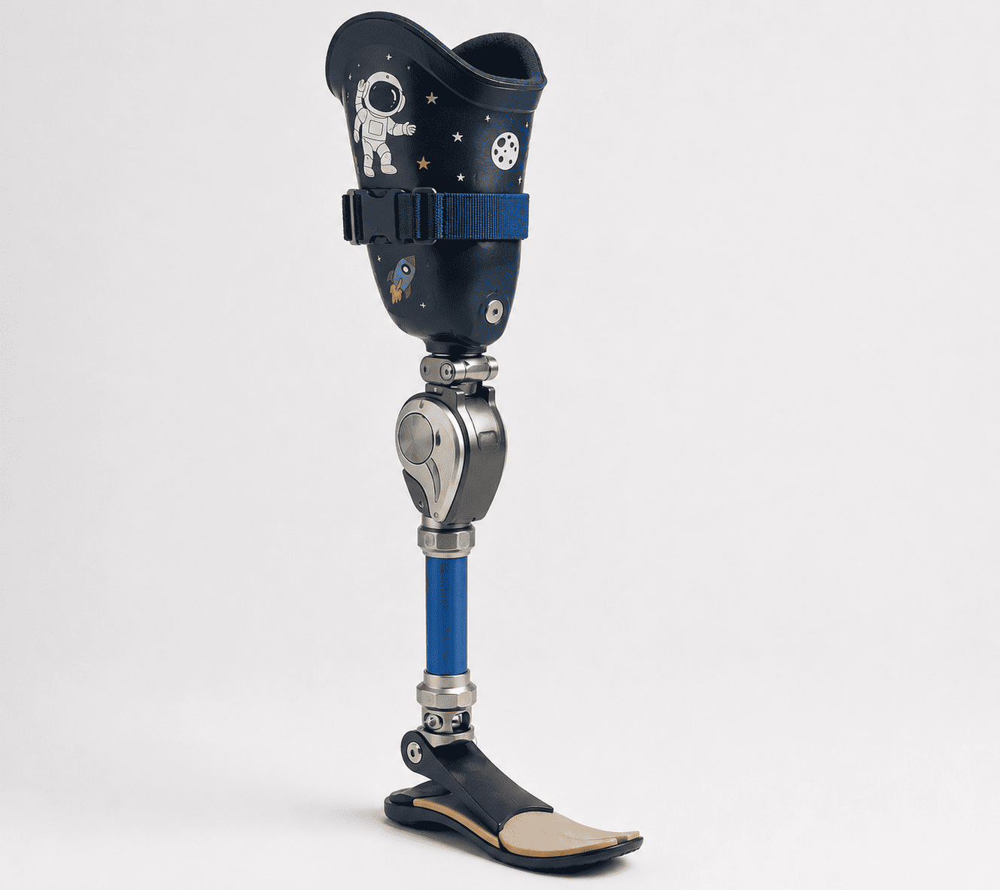
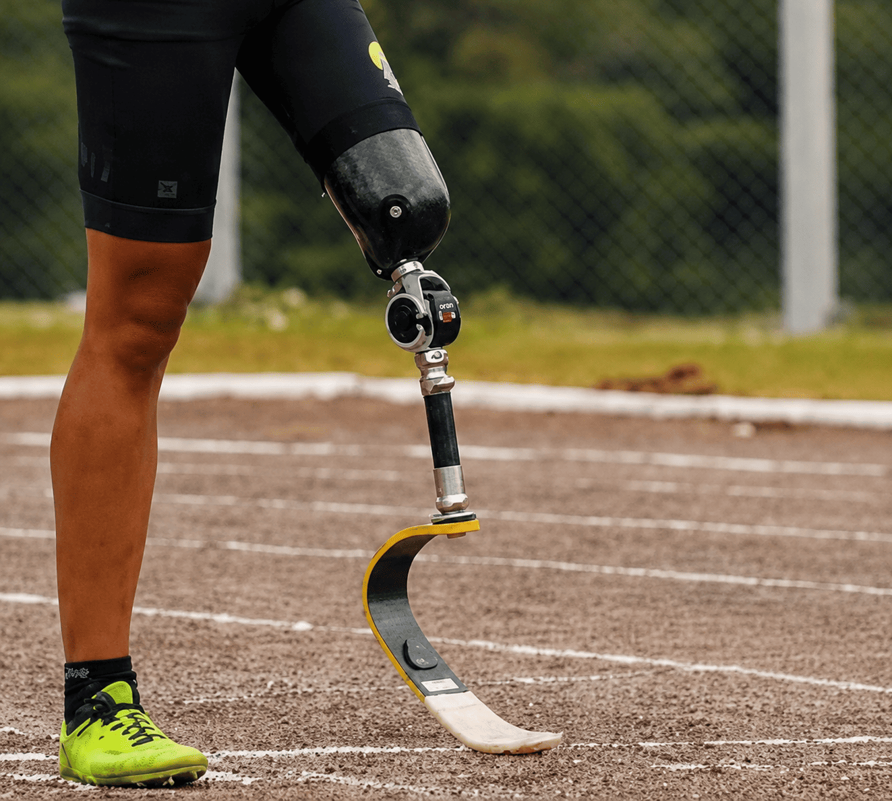

Fabricadas sob medida para cada paciente, nossas próteses combinam tecnologia de ponta com o cuidado artesanal de 40 anos de experiência.
Do membro inferior ao superior, da criança ao atleta — desenvolvemos o dispositivo certo para cada corpo e cada estilo de vida.

Próteses transtibiais, transfemorais e de desarticulação, desenvolvidas para proporcionar marcha natural, estabilidade e conforto no dia a dia.

Soluções para amputações de dedos, parciais de mão, transradiais e transumerais — com foco em funcionalidade e estética para o cotidiano.

Desenvolvidas com materiais seguros, leves e coloridos para que as crianças cresçam com confiança e mobilidade — com ajustes conforme o desenvolvimento.

Para quem não quer parar — próteses de alta performance para corrida, ciclismo e outros esportes, desenvolvidas com fibra de carbono e componentes premium.
Trabalhamos com os melhores componentes do mercado global — Ottobock, Össur, Fillauer e outras marcas líderes.
Cada prótese é moldada manualmente pelo nosso time, garantindo encaixe perfeito e conforto incomparável.
Acompanhamento pós-entrega com ajustes e manutenção para garantir que o dispositivo evolua com você.
Um processo humanizado, passo a passo, para garantir o melhor resultado.
Começamos com uma conversa — presencialmente ou pelo WhatsApp. Entendemos suas necessidades, estilo de vida e expectativas antes de qualquer decisão.
Realizamos a moldagem do coto e todas as medições necessárias para garantir um encaixe preciso e confortável.
Nossa equipe fabrica a prótese manualmente, selecionando os componentes certos para seu perfil — atividade, peso, altura e objetivo de reabilitação.
Antes da entrega, fazemos a prova com o paciente e realizamos todos os ajustes necessários para garantir conforto e funcionalidade ideais.
Orientamos o uso correto, cuidados e manutenção. E seguimos acompanhando a sua evolução com visitas e ajustes periódicos.
Em menos de 30 minutos você entende qual prótese é ideal para você — e sai com um plano claro para sua reabilitação.